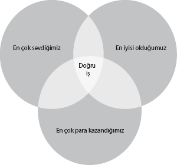
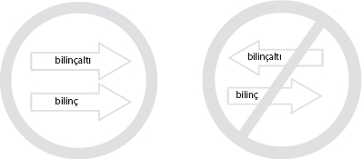

Geldik işin “duygusal” tarafına
 . Hepimiz için çok önemli bir konu da para ve kariyer... Hatta neredeyse hayatımızı para kazanmak etrafında kurguluyoruz, başka bütün her şeyi para ve kariyer rotamızın etrafında şekillendiriyoruz.
. Hepimiz için çok önemli bir konu da para ve kariyer... Hatta neredeyse hayatımızı para kazanmak etrafında kurguluyoruz, başka bütün her şeyi para ve kariyer rotamızın etrafında şekillendiriyoruz.
Geldik işin “duygusal” tarafına. Hepimiz için çok önemli bir konu da para ve kariyer... Hatta neredeyse hayatımızı para kazanmak etrafında kurguluyoruz, başka bütün her şeyi para ve kariyer rotamızın etrafında şekillendiriyoruz.
Peki, NeuroFormat® Sistemini kullanarak bu konuda neler yapabiliriz?
Aslında önem teşkil eden her konuda olduğu gibi, para ve kariyer alanında yapabileceklerimiz de sınırsız. Şimdi olası uygulamaları görelim.
Doğru iş?
İş hayatında başarı aslında çalıştığımız işin, mesleğimizin, kariyer alanımızın bizim için ne kadar doğru bir seçim olduğuyla çok ilgili. Peki, doğru olduğunu nasıl anlayacağız?
Doğru bir işte çalışıp çalışmadığınızı anlamak için 3 kriter düşünün. Şu an yaptığınız meslek bu 3 kriteri de karşılamalı.
1- En çok sevdiğimiz
2- En iyisi olduğumuz
3- En çok para kazandığımız

Açıkça söylemek gerekirse, bunların arasından benim olmazsa olmaz dediğim en önemli kriter, yaptığınız işi sevmek.
Özellikle ülkemizde, çocuklarımızı isteklerinden bağımsız olarak “standart” yollara sokmak gibi bir eğilimimiz var. Tabii istisnaları olmakla beraber, matematik ve fen bilimlerinde başarılı olan erkekler mühendislik, çok başarılı olmayanlar diğer dallarına kayıyorlar. Kızlar bu konuda biraz daha şanslı olsa da, onlar da çoğu zaman istediklerinden ziyade mecbur olduklarını hissettikleri alanları tercih ediyor.
Aslında hepimiz başka bir hata daha yapıyoruz. Kararımızı mezun olduktan sonra nasıl bir hayat yaşayacağımızdan ziyade, sadece o dala ilgi duyup duymadığımız üzerinden veriyoruz. Evet, seçtiğimiz dalı seviyor olmamız tabii ki çok önemli, ama eksik. Peki, o mesleğin hayatı bizim için uygun mu? Mesela, fizikten çok keyif aldığınız için, inşaat mühendisliğini seçiyor olabilirsiniz. Ama şantiyelerde çalışmaktan hiç hoşlanmayacaksanız işiniz zor.
Eğer güzel ve mutlu bir hayat yaşamak istiyorsanız, sabah kalkarken içinizden “lanet okumadığınız”, pazartesi sendromu yaşamadığınız bir iş seçin. Çevrenizdekilere bakıp, kimsenin işini sevmediğini, herkesin bir şekilde çalışmak zorunda olduğunu, sizin de buna mecbur olduğunuzu düşünüyor olabilirsiniz. Herkesin, büyük bir toplum baskısı ve aslında çoğu zaman “yersiz” kaygılarla istemedikleri hayatlar yaşıyor olması, sizin de onlar gibi yaşamanızı gerektirmez.
Eğer sevdiğiniz bir işi yapıyorsanız, uzun vadede başarılı olmanız zaten kaçınılmaz. Tabii bu meslekten mesleğe değişse de, konu üzerinde “zevkle” çalışmayı sevmek; uzun vadede başarıyı getiriyor.
Evet, tabii ki istisnalar var. Boyunuz 1.50, yaşınız 30 ve hayatınızda basket topunu elinize bile almadıysanız, basketbol oynayarak para kazanmayı pek ummayın derim. Seçiminizi iyi olduğunuz, yeteneğinizin bulunduğu alanlarda yapmanız mutluluğunuz açısından oldukça önemli.
Bu arada yetenekli olmakla o dalı sevmek de zaten birbiriyle ilişkili durumlar. Hepimiz yeteneğimiz olmayan, anlamadığımız konulardan ziyade başarılı olduklarımızı sevmeye eğilimliyiz. Zira hiçbirimiz pek bir şey anlamadığımız, kendimizi kötü hissettiğimiz konuların üzerine gitmeyi tercih etmiyoruz.
Peki ya çok para
kazanmak meselesi?
Günümüz dünyasında sevmek ve yetenekli olmak yetmiyor. O işin para kazandırma potansiyelinin olup olmadığının değerlendirilmesi de gerekiyor.
Hep şunu söylerim, “Çocuk yapmak kapitalizmle yapılan geri dönülmez son anlaşmadır”. Tabii ki hayatımızın hangi döneminde olduğumuza göre önceliklerimiz farklı. Ancak eğer gerçekten bakmakla, iyi eğitim almalarından ve iyi hayat yaşamalarından sorumlu olduğunuz birileri varsa, ne kadar para kazandığınız öncelikli hale gelecektir.
Bu işin tek bir doğrusu ya da “maksimum”u yok. Herkesin kendine göre “optimum”u bir başka deyişle “en uygunu” bulması gerekiyor.
Eğer seçiminizi çoktan yaptıysanız, değiştirmek yerine bu 3 kriterde nasıl daha iyi olacağımızı görelim. Nasıl işimizi daha fazla seveceğimizi, nasıl daha iyi olacağımızı ve daha çok para kazanacağımızı irdeleyelim.
NeuroFormat® ile işimizi sevmek
Eğer istemeden de olsa çalışmak zorunda olduğunuz ve sevmediğiniz bir işiniz varsa “doğru yerdesiniz”. İş olarak değil tabii ki, değiştirmek için.
Bunu yapabilmek için, işinizi hangi nedenlerden dolayı sevmediğinizin detaylı bir analizini yapmalısınız. Bu aslında çok da zor olmasa gerek. Zaten, büyük ihtimalle uzun yıllardır her gün bu konularla ilgili şikâyet ediyorsunuzdur...
Sevmediğiniz insanları, durumları, gitmek zorunda olduğunuz yerleri, yapmak zorunda olduğunuz küçük görevleri, aklınıza gelen her şeyi, ama en önemlisi neden sevmediğinizi belirterek OLUMSUZ bir ifade oluşturun. Bulduğunuz OLUMSUZ ifadeleri, tüm göz noktalarını tarayarak birer birer etkisiz hale getirin.
“Patronumdan bana sürekli kızdığı, yapabileceğimden çok daha fazla iş yüklediği için nefret ediyorum.”
“Bu iş yerinden, çok gürültülü ve gergin olduğundan dolayı nefret ediyorum.”
Kabul ediyorum, temizlik işiniz çok kısa sürmeyebilir. Ancak, gerçekten fazla alternatifiniz yoksa yapmaya değer bence.
NeuroFormat® ile işimizi iyi yapmak
Ne tür bir işte çalıştığınızı “haliyle” bilmiyorum. Ancak, başarılı olmanızın aslında tek bir formülü var. İşinizle ahenkli olmanız. Yaptığınız iş ne olursa olsun, daha iyi olmanız için bilinçaltınızı karşınıza değil, arkanıza almanız gerekiyor.

Bunu gerçekleştirebilmek için yapacağımız oldukça basit. İşiniz için yapmanız gereken eylemelerde herhangi bir kaygı, korku yaşıyor musunuz?
12 Temel İhtiyacı düşünerek sorulara cevap verin. Mesela, telefonda satış yaparken çekinmenizi sağlayan bir endişe var mı?
Tanımadığınız insanları arayarak rahatsız etmeniz, sizi rahatsız edici bulmaları, tanıdıklarınızı aradığınızda çıkarcı olduğunuzu düşünmeleri ihtimali...
İşiniz her neyse, küçük küçük görevleriniz olmalı. Zorlandıklarınızı ve daha iyi yapmanız gereken küçük görevleri düşünün, onlarla ilgili kaygılarınızı (kaygı bölümünde olduğu gibi) temizleyin. Gerçekleştirdiğiniz işlerle ilgili kaygıları bilinçaltı seviyesinde temizlerseniz, yaptığınız işleri çok daha doğal ve otomatik şekilde yaparsınız. Bilinçaltınız korkularından dolayı sizi sabote etmeyi bıraktığı zaman, kalıcı başarıya ulaşırsınız.
Utangaçlığı temizlemek
Eğer kariyerinizde başarı arıyorsanız tabiri caizse “yırtık” olmalısınız! Ne yazık ki, başarı isteyerek, onun peşinden koşarak geliyor. Başarıyı istesek bile eğer utangaçsak, bizim başarıyı yaratmamızdan daha çok, bize gelen kısıtlı fırsatları değerlendirmek zorunda kalıyoruz. İşte bu yüzden, utangaçlık ilişkilerde olduğu gibi, kariyerimiz önünde de en büyük engel.
Bu konuda utangaçlıkla ilgili bölümü tekrar okuyarak, özellikle eyleme geçme korkusunun temizlendiği uygulamaları yapmanız sadece mevcut işinizde değil, bütün hayatınızda başarılı bir kariyere sahip olmanızı sağlayacaktır.
NeuroFormat® ile daha fazla para
Ve son olarak gelelim PARA’ya!.. Eğer doğru bir sektörde, tüm doğru hareketleri yaparak hâlâ hak ettiğiniz parayı kazanamıyorsanız bilinçaltınızın bu konuda sizi bloke ediyor olması olasıdır. Bu blokajı aşabilmek için, yine bilinçaltınızın para kazanma konusundaki kaygılarını temizleyeceğiz.
12 Temel Korkuyu hatırlayın ve iki temel soru sorun:
“Para kazanma sürecine girmek hangi temel korkuları yaratıyor?”
“Para kazanırsanız hangi temel korkular tetiklenir?”
İlk sorudaki para kazanmanız için yapmanız gereken eylemi neden tüm gücünüzle, tüm inancınızla, tüm benliğinizle gerçekleştirmiyorsunuz? Hangi 12 Temel İhtiyaçtan biri tetikleniyor olabilir?
Mesela, “karpuz” sektöründe çok büyük para olduğunu fark ettiniz. Neden karpuz satmıyorsunuz?
Kısaca 12 Temel Korkuyu tarayın... Karpuz satarsanız belki de üniversite mezunu olarak bu işi yapıyor olmak hem kendinizin hem de başkalarının gözünde sizi başarısız hissettirecek olabilir. İşte, eğer karpuz satma işine girmeniz gerekiyor ve bu konuyla ilgili içinizdeki “çekinceleri” temizlemeniz gerekiyorsa, onların ne olabileceğini 12 Temel Korkuyu düşünerek bulun ve NeuroFormat® tekniğiyle tüm göz pozisyonlarını temizleyin.
Kaygılarınızı nasıl temizleyeceğinizi çok iyi biliyorsunuz...
Peki ya para kazanırsanız?
Yine aynı şekilde, para kazanmak konusunda kendinizi baltalıyor olabilirsiniz. Belki kötü bir insan olduğunuzu, bunu hak etmediğinizi ya da para kazanırsanız insanların sizden borç isteyeceğini ve onlarla aranızın bozulacağını (babanız böyle bir olay yaşamış olabilir) düşünüyor olabilirsiniz. Belki de para kazanırsanız insanların sizi paranız için seveceğini ve gerçek sevgiyi kaybedeceğinizi ya da sorumluluklarınızın artacağını düşünüyor olabilirsiniz.
Bu korkular her neyse, gerçekten sonuca ulaşmak için bu blokajları kaldırmalısınız. Unutmayın, daha fazla motive olmanız yetmez, zira beynimizin önceliği bizi korumak...
Şimdi bazılarımızı daha çok ilgilendiren iki çok önemli soruna geçelim:
SİGARA ve KİLO...